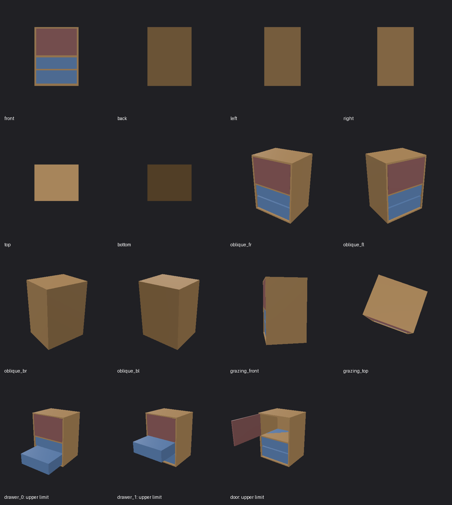

The runtime baseline detects excess triangles. It cannot judge joint correctness: the joint-axis example remains uncertain, while a separate privileged audit finds a mismatch only after the door moves. Audit evidence is never given to the judge.
Reference screenshots and videos · Machine-readable summary
| Case | Runtime verdict | Preview | Trace | Audit |
|---|---|---|---|---|
| triangle-budget | fail | Screenshots and videos | Verifier evidence | Independent gold audit |
| joint-axis | uncertain | Screenshots and videos | Verifier evidence | Independent gold audit |
